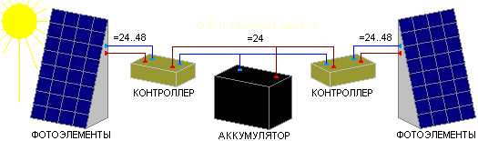

Пример расчета системы на солнечных батареях

Cистема энергоснабжения на солнечных батареях кажется очень простой. Как и в большинстве других систем электроснабжения от автономных источников, в ней всего 4 основных компонента — сами фотоэлектрические панели, аккумуляторы, контроллер заряда и инвертор, преобразующий низковольтный постоянный ток к бытовому стандарту ~220В. Однако все элементы должны быть согласованы между собой. И если компоненты, общие для всех подобных систем (инвертор, аккумуляторы, провода) рассмотрены на отдельной странице, то здесь я хочу рассмотреть компоненты, специфичные именно для фотоэлектрических систем — панели фотоэлементов (солнечные батареи) и контроллеры для них. Но, конечно, рассматривается самый главный вопрос — выбор мощности солнечных батарей или, что в реальной жизни с её неизбежными ограничениями в финансовых и материальных ресурсах гораздо актуальнее, — какой результат можно ожидать от солнечных батарей той или иной номинальной мощности, то есть стоит ли игра свеч?
Определение возможностей Солнца
Методика расчёта
Пример расчёта
Анализ результатов расчёта
Выбор оборудования
Выбор панелей фотоэлементов
Выбор размеров панели
Выбор напряжения солнечной батареи
Типы фотоэлементов
Выбор размещения и суммарной мощности панелей
Выбор контроллера
Типы контроллеров заряда
Выбор мощности контроллера
Расчёт потребностей в электроэнергии для того или иного режима её использования рассмотрен на отдельной странице. Теперь надо определить возможности Солнца и, прежде чем начинать вкладывать в создание системы свои деньги и своё время, сравнить эти возмождности со своими потребностями. Основа расчёта ожидаемой выработки энергии — это данные по мощности солнечного излучения с учётом погодных условий. Желательно, чтобы данные были для разных углов наклона панели, хотя бы для вертикальной и горизонтальной ориентации.
Важнейшим вопросом является выбор угла наклона панели. Имея в виду возможность круглогодичного использования, следует предпочесть угол на 15° больше географической широты (к тому же, чем больше наклон, тем меньше на панели будут задерживаться пыль и снег). Для Москвы это 70°, благо возможность установить панель с ориентацией на юг под таким наклоном у меня имеется (отклонение от южного направления примерно на 10° к востоку непринципиально). Кстати, если не предполагается зимнее использование солнечных батарей, они вполне могут быть размещены на стене или скате крыши, ориентированном не на юг, а на запад или на восток, причём в этом случае лучше увеличить наклон панелей по сравнению с оптимальным для лета или вообще установить панели вертикально, так как в утренние и вечерние Солнце стоит близко к горизонту.
Методика расчётаНаклон выбран. Теперь можно приступать к оценке потенциальной производительности солнечных батарей, или, что то же самое, к оценке количества солнечных модулей, необходимых для работы системы в желаемом режиме. Оценку следует провести как минимум для худшего месяца (для Москвы это январь), для большей части года (февраль - ноябрь) и для летнего максимума (в Москве это июль).
Стандартная инсоляция рассчитывается для площади в 1 квадратный метр.
Однако точная площадь элементов солнечной панели нам не известна. Зато
известна её номинальная мощность, которая определяется для стандартного
потока света в
Таким образом, выработку фотоэлектрической панели будем рассчитывать по следующей формуле:
Соответственно, зная месячную инсоляцию, можно оценить номинальную мощность солнечной батареи, требуемую для обеспечения необходимой месячной выработки.
Как правило, максимальная мощность солнечной
батареи, заявленная производителем, достигается при напряжении на её
выходе, превышающем напряжение аккумуляторных батарей на
Мощность солнечного излучения меняется от месяца к месяцу, а номинальная мощность солнечной батареи неизменна, и именно на неё следует ориентироваться при выборе места для установки и определении затрат. Формула (2) удобна, чтобы оценить номинальную мощность батареи для конкретных условий инсоляции, но мало подходит для оценки её возможностей в течении всего года. Поэтому построим таблицу на основании формулы (1), чтобы посмотреть, когда и какие режимы энергоснабжения могут позволить солнечные батареи различной номинальной мощности.
Пример расчёта
Поскольку для Москвы нет данных для наклона 70°, но есть данные для наклонов 40° и 90°,
то в первом приближении можно использовать среднее значение между этими
данными. Полученные значения месячной выработки округлялись до
Проанализируем полученную таблицу.
Прежде всего надо сказать то, что 400-ватной номинальной мощности батареи в Москве не хватит на поддержку аварийного режима
даже в летние месяцы. Тем не менее, в период с мая по начало августа её
выработка превышает 80% аварийного минимума, а потому с учётом тепла и
длинных дней в этот период такую номинальную мощность можно считать
допустимым аварийным вариантом для дачи, особенно если инвертор будет
работать не постоянно, а только тогда, когда электричество действительно
нужно. Однако приобретение солнечных батарей меньшей мощности можно
рассматривать лишь для каких-то специальных целей — хоть сколько-нибудь
приемлемое круглосуточное бытовое электроснабжение они не обеспечат даже
летом! Для маломощных систем критически важным является собственное потребление инвертора и контроллера заряда. Оно кажется незначительным (в расчёт заложено всего
500-ваттная батарея в подмосковных условиях уже способна дать аварийный минимум в период с мая почти до конца августа и выдавать 80% этого минимума в апреле и даже в марте. 600-ваттная система расширяет период возможного аварийного использования «солнечного электричества» со второй половины марта до начала сентября.
800-ватная солнечная батарея летом позволяет базовый режим электропотребления, да и с марта по сентябрь выработка уверенно превышает аварийный минимум. Кроме того, такая установка уже в силах обеспечить напряжение в розетке почти круглогодично — лишь в декабре и январе наблюдается небольшой дефицит выработки.
Следующий рубеж берёт батарея с номинальной мощностью
Двухкиловаттная солнечная батарея может поддерживать комфортный
или близкий к нему режим с мая до середины августа и базовые
потребности с февраля по октябрь. Правда, в ноябре её мощности хватит
лишь для аварийного режима, а в декабре и январе даже эти скромные
требования она не обеспечит. Лишь номинальная мощность в
5.3 кВт номинальной мощности позволяют в мае-августе использовать
электричество от батарей практически без ограничений и круглый год
гарантируют базовые потребности.
Наконец, солнечная батарея с номинальной мощностью
Впрочем, эти огромные цифры относятся к пасмурной зимней Москве. Судя по таблице инсоляции, для тех же режимов в Сочи и Астрахани затраты уменьшатся примерно втрое, во Владивостоке и Петропавловске-Камчатском — вчетверо, а в Южно-Курильске — аж впятеро. От 700 тысяч до миллиона рублей за безшумное и безтопливное автономное электроснабжение — это уже интересная цена, вполне сопоставимая со стоимостью нового автомобиля среднего класса.
И последнее замечание. Расчёт таблицы проводился по средним величинам за годы наблюдений. В годы с аномальной погодой месячная выработка может отличаться от этих значений на десяток-другой процентов, а то и больше.
Выбор оборудованияКак уже говорилось, общие для всех автономных систем электроснабжения — инверторы, аккумуляторы, провода — рассмотрены на отдельной странице. Там же обсуждается самый первый вопрос при построении любой системы автономного электроснабжения — выбор рабочего низковольтного напряжения, под которое и подбирается всё оборудование.
Выбор панелей фотоэлементовПри выборе панелей следует учитывать три фактора — их геометрию, номинальное выходное напряжение и тип фотоэлементов.
Выбор размеров панели
Геометрия определяется конкретными условиями установки, и здесь
трудно дать общие рекомендации кроме одной — если есть возможность
выбора между одной большой панелью и несколькими маленькими, лучше взять
большую — более эффективно используется общая площадь и будет меньше
внешних соединений, а значит, выше надёжность. Размеры готовых панелей
обычно не слишком велики и не превышают полтора-два квадратных метра при
мощности до
Для достижения нужных значений номинального напряжения и номинальной мощности панели можно объединять в последовательные сборки, которые затем коммутируются параллельно — аналогично тому, как коммутируется банк аккумуляторов. Как и в случае аккумуляторов, в одной сборке следует использовать только однотипные панели.
Обычно панели заводского изготовления имеют прямоугольную форму с соотношением сторон
С напряжением тоже всё просто — лучше выбирать 24-вольтовые
панели, поскольку рабочие токи у них вдвое меньше, чем у 12-вольтовых
той же мощности. Панели одинаковой мощности одного и того же
производителя, рассчитанные на разное напряжение, обычно различаются
лишь внутренней коммутацией фотоэлементов. Панели с номинальным
напряжением выше
При самостоятельной сборке панелей из отдельных фотоэлементов не следует забывать о защитных диодах в каждой цепочке для предотвращения протекания обратного тока при неравномерной засветке. В противном случае мощность, выработанная освещёнными секциями панели, вместо полезной нагрузки будет выделяться на затенённом фотоэлементе, а это чревато его перегревом и полным выходом из строя (неосвещённый фотоэлемент в этой ситуации окажется открытым диодом). Допустимый прямой ток защитных диодов должен быть больше, чем ток короткого замыкания защищаемой цепочки фотоэлементов при максимальной освещённости.
Типы фотоэлементовНаконец, надо выбрать тип фотоэлементов. В настоящее время наиболее часто предлагаются фотоэлементы на монокристаллическом или поликристаллическом кремнии. Монокристаллический кремний обычно имеет КПД в районе 16-18%, а поликристаллический — 12-14%, зато он несколько дешевле. Однако в готовых панелях цена за ватт (т.е. в пересчёте на вырабатываемую мощность) получается почти одинаковой, и монокристаллический кремний может оказаться даже выгодней. По такому параметру, как степень и скорость деградации, разницы между ними практически нет. В связи с этим выбор в пользу монокристаллического кремния очевиден — при равной мощности панели из него компактнее. Кроме того, зачастую при снижении освещённости монокристаллический кремний обеспечивает номинальное напряжение дольше, чем поликристаллический, а это позволяет получать хоть какую-то энергию даже в весьма пасмурную погоду и в лёгких сумерках. Зато у поликристаллического кремния обычно ниже напряжение холостого хода (у монокристаллического оно может превышать номинал вдвое), ниже и напряжение максимальной мощности. Но если подключать панель к инвертору и аккумулятору не напрямую, а через современный контроллер, то это не имеет существенного значения.
Выбор размещения и суммарной мощности панелейОчевидно, что обычно нет смысла выбирать суммарную мощность панелей фотопреобразователей больше мощности инвертора. Тем не менее, такое превышение может быть оправдано при наличии мощной постоянной нагрузки и мощного блока аккумуляторов или в расчёте на длительные периоды пасмурной погоды.
Ещё одним интересным вариантом, когда суммарная мощность панелей может существенно превосходить как мощность инвертора, так и мощность, необходимую для зарядки аккумуляторов, является их размещение на противоположных стенах дома или скатах крыши, если они ориентированы на запад и восток — тогда мощность каждого поля солнечных батарей (восточного и западного) может достигать 80% от полной требуемой мощности системы, а мощность фотопанелей, подключённых к одному контроллеру, может превышать его номинальную мощность почти в полтора раза! Дело в том, что прямые солнечные лучи не могут одновременно освещать две противоположные стены или ската крыши, а мощность, вырабатываемая батареей при отсутствии прямой засветки, падает раз в 10 (во избежание перегрузки контроллера берём её с двухкратным запасом, отсюда и получается цифра 80%, а не 90%). Да, такая система будет дороже, чем «моноблочная» система с той же рабочей мощностью но с единым полем фотопанелей, ориентированным на юг, — ведь панелей надо больше! В чём же преимущество такой «сплит-системы» над «моноблочной»?
В период длинных дней, когда Солнце всходит на востоке или даже северо-востоке, а заходит на западе или северо-западе, одно из полей «сплит-системы» всегда будет освещено Солнцем и потому сможет выдавать хорошую мощность. Лишь в полдень солнечные лучи будут скользить по обоим полям панелей, но в это время солнечный свет максимален, и воспринимаемое обоими панелями рассеянное излучение весьма существенно. В то же время ориентированный на юг «моноблок» даёт мощный максимум выработки в середине дня, но утром и вечером его выработка обусловлена лишь рассеяным светом и потому минимальна. Между тем именно в это время хорошо бы зарядить аккумуляторы на ночь или после ночи! В пасмурную погоду облака рассеивают свет, и его одинаково успешно воспринимают оба поля фотопанелей, так что общая выработка «сплит-системы» превосходит «моноблок» прямо пропорционально суммарной мощности их панелей (но сама выработка достаточно мала, что исключает опасность перегрузки контроллера заряда). Лишь в короткие солнечные зимние дни ориентированный на юг «моноблок» по дневной выработке будет превосходить эту «сплит-систему». Но на большей части территории России зима пасмурная, а в пасмурные дни важна суммарная мощность всех фотопанелей, так что и здесь «моноблок» проигрывает. Если же ориентировать поля фотопанелей не на противоположные стороны (восток и запад), а на смежные юго-восток и юго-запад, то и зимой эта система будет вне конкуренции.
Таким образом, предлагаемый вариант обеспечивает по сравнению с традиционной ориентацией батарей только на юг гораздо бóльшую и более равномерную суточную выработку, причём возможности всех панелей используются по максимуму в наиболее энергодефицитные пасмурные дни. К тому же всё оборудование помимо панелей рассчитано на существенно меньшую пиковую мощность, нежели суммарная мощность солнечных батарей, а значит, оно дешевле и компактней. Проигрыш «лобовому» увеличению мощности системы наблюдается лишь в солнечные зимние дни, коих в средней полосе России весьма немного.
Выбор контроллераВ современных системах контроллер заряда стоит между солнечной батареей и аккумуляторами. Его главная задача — это нормировать напряжение, вырабатываемое панелями фотоэлементов, к напряжению, необходимому для заряда аккумуляторов с учётом их текущего состояния, в том числе отключая их от фотоэлементов при полной зарядке во избежание перезаряда (обычно перезаряд предотвращается по напряжению, но не по току).
Типы контроллеров зарядаДешёвые модели контроллеров заряда для регулирования напряжения на нагрузке обычно используют широтно-импульсную модуляцию (ШИМ), — по сути они просто то подключают солнечные батареи к аккумуляторам, то отключают, поддерживая на аккумуляторах нужное напряжение. Но самые продвинутые модели способны даже «подтянуть» к необходимому уровню слишком низкое напряжение, вырабатываемое панелями фотоэлементов при слабом освещении — конечно, не просто так, а за счёт уменьшения тока.
При правильном выборе панелей большой необходимости в повышении
напряжения нет. Гораздо важнее возможность снизить относительно высокое
«оптимальное» напряжение фотоэлектрической батареи, соответствующее
максимальной вырабатываемой мощности, до более низкого уровня,
необходимого для зарядки аккумуляторов, преобразовав излишек напряжения в
дополнительный ток и обеспечив полное использование номинальной
мощности батареи. Как уже говорилось выше, при
прямой коммутации выхода панели фотоэлементов на аккумуляторы из-за
неоптимальной нагрузки напряжение может «проседать» ниже оптимума на
Технологию, предотвращающую такие потери, некоторые производители контроллеров называют MPPT (Maximum Power Point Tracking — отслеживание точки максимальной мощности). Она заключается в постоянном измерении вырабатываемого панелями тока и напряжения и обеспечении их оптимального соотношения, которое зависит, в частности, и от времени суток, и от текущей ситуации на небе (выглянуло солнце или набежало облако). Это позволяет достичь оптимального использования мощности батарей практически во всех режимах работы и уменьшить потери до 3%. Однако стоимость таких контроллеров существенно превышает стоимость простейших моделей, расчитанных на тот же ток нагрузки. Кроме того, при одинаковом номинальном токе нагрузки суммарная номинальная мощность панелей, подключаемых к контроллеру с MPPT, обычно заметно меньше суммарной мощности панелей, подключаемых к дешёвым контроллерам с ШИМ-регуляцией — как раз на величину потерь, компенсируемых MPPT, т.е. до 25% и более. В результате в солнечный день контроллер с MPPT полностью использует мощность своих солнечных батарей, в отличии от ШИМ-контроллера, использующего лишь часть энергетического потенциала подключённых к нему панелей. Зато в условиях плотной облачности контроллер с ШИМ-модуляцией может выдавать в нагрузку больший ток по сравнению с MPPT благодаря более полному использованию большей полной мощности подключённых к нему панелей; в сумерках же MPPT опять может быть оптимальнее, если в контроллере предусмотрена возможность «подтягивания» слишком низкого напряжения, но такие периоды обычно весьма кратковременны. Поэтому, если ориентироваться на облачную погоду и учитывать тот факт, что рабочий ток контроллеров весьма ограничен, может оказаться выгоднее приобрести пару лишних панелей и использовать ШИМ-контроллеры заряда, сэкономив на MPPT, — отдаваемый в нагрузку ток будет относительно стабилен в более широком диапазоне освещённостей за счёт повышенных потерь при ярком солнце. С другой стороны, когда каждый ватт на счету, а токи относительно невелики (особенно при небольшом числе панелей), использование MPPT безусловно более предпочтительно.
В качестве дополнительной опции многие контроллеры имеют специальный выход для низковольтной нагрузки, автоматически отключаемый при слишком большом разряде аккумуляторов. Однако, если не предполагается прямое подключение низковольтных потребителей, это не нужно, поскольку практически все современные инверторы делают то же самое для всей подключённой к ним мощности, в то время как мощность контроллеров заряда весьма ограничена.
Выбор мощности контроллера
Наиболее распространены контроллеры, рассчитанные на ток в

Схема одновременного подключения нескольких контроллеров заряда.
При подключении панелей к контроллеру надо следить, чтобы их суммарный максимальный ток не превышал